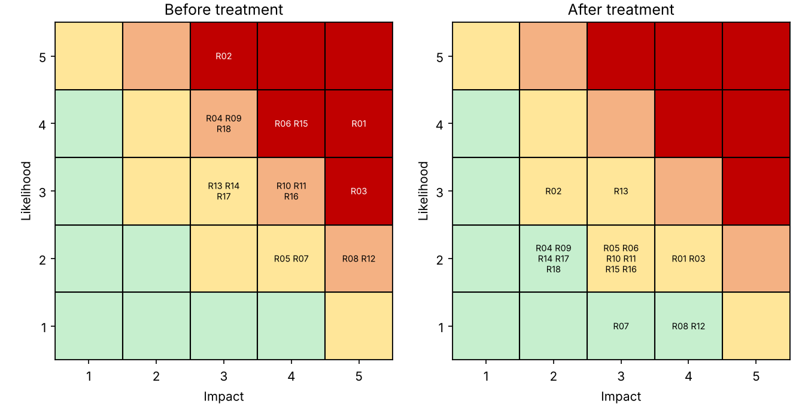
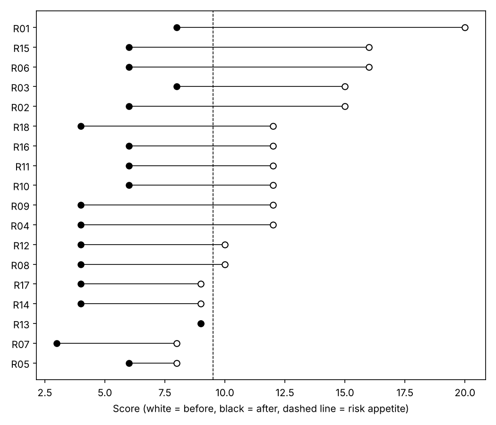
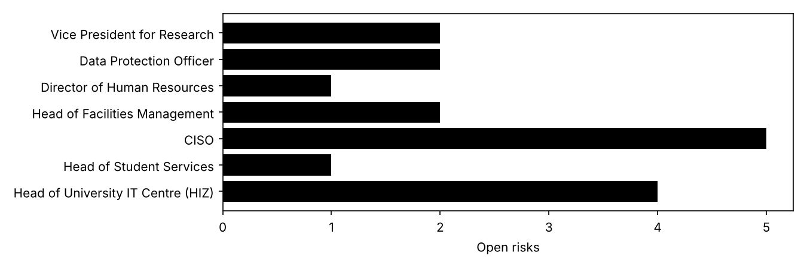

As of 2026-11-21. Source: saarland-university-risk-register.xlsx
| Risks | 18 |
| Open | 17 |
| Overdue | 5 |
| High or critical before | 13 |
| High or critical after | 0 |



| ID | Risk | Owner | Due | Days late |
|---|---|---|---|---|
| R06 | Unpatched servers run by institutes (shadow IT) | CISO | 2026-07-31 | 113 |
| R04 | Loss or theft of laptops and mobile devices | CISO | 2026-08-31 | 82 |
| R15 | Attacks detected too late | CISO | 2026-09-15 | 67 |
| R02 | Phishing and theft of staff or student credentials | CISO | 2026-09-30 | 52 |
| R12 | Fire, water or power failure in the data centre | Head of Facilities Management | 2026-10-31 | 21 |